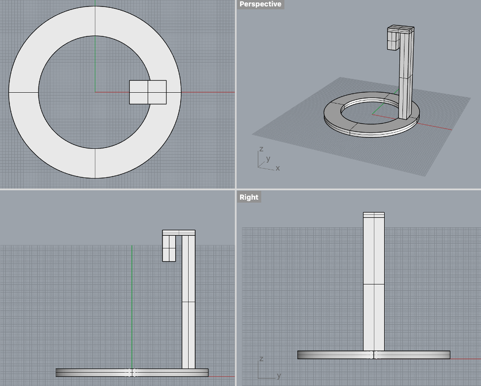
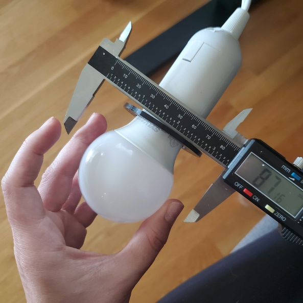
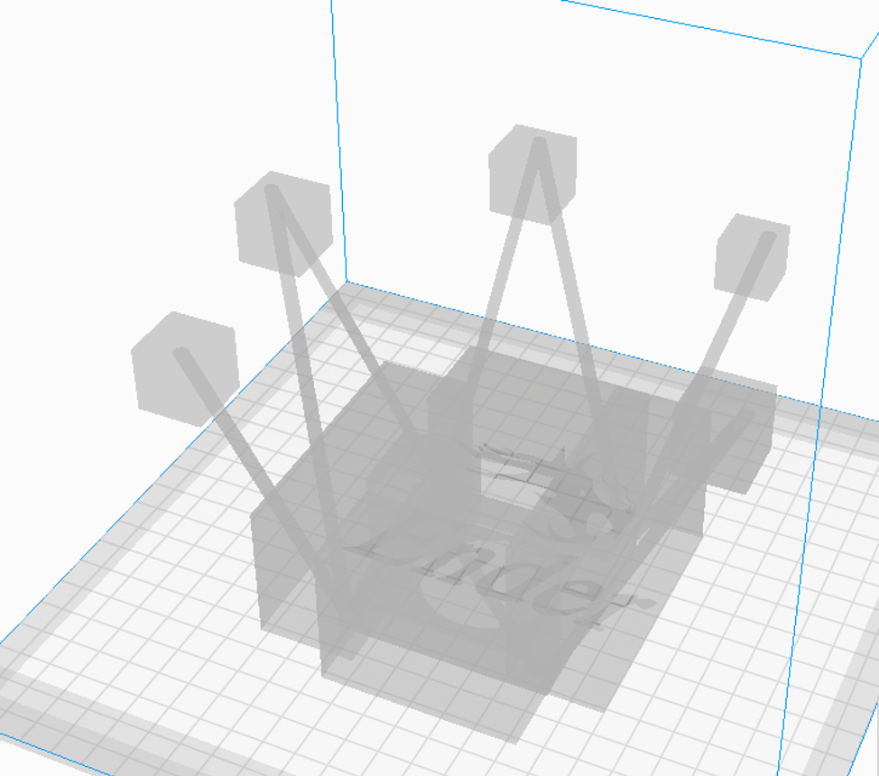

Lamp Assembly!

For this assignment, the objective was to create a lamp assembly around the innerds of the light fixture that can be easily disassembled.
For this assignment, the objective was to create a lamp assembly around the innerds of the light fixture that can be easily disassembled.

The first thing I did was take some measurements of the lamp cord I purchased for this class, I decided to use the holes it has at the top of it to create an adapter fitting for the future lamp to hang on.


After printing I found the height to be too short and wouldn’t really allow me to nicely hook the adapter fitting on to the lamp without colliding with the depth of the hole. Additionally, the diameter of the hole was way too tight to put it on the other way to side the wires through.


I broke the hook off to try out how the hook fit in the hole and even though it fit, it was a little too snug getting to the point where I thought I was going to break it pulling it back off again.

To fix these issues, I altered the tolerance of the y direction for the hook part, expanded the diameter, and extended the height to fix these problems. I also added a curve to the hook so that it didn’t look so box-y and had a little more material to strengthen those corners.

This ended up being a great size to work with, when I make the shade ill make it such that I can slide this through the top of it.


Files:

My goal with the shade is to make something that might be able to eventually snap on to my printer to provide some light there. I originally wanted to mess with the morph pattern function and wanted it to be twisted as well. Once I saw some peoples draft prints of morphing a pattern on to the surface, I realized how dark it can be (especially with the black PLA I have) and ultimately, I want this to really illuminate my 3D printer area. I decided to use shapes like hexagons and squares because the straight edges might make it easier to eventually have adapters that hook on to the top for the printer eventuall. I was inspired by this wall décor I have hanging in my room, which is just a low poly multi-faceted shape and used its angles and connection points to inspire a design.
I started with measuring the minimum inner surface of the lamp by using my calibers and estimating how much space I would need for my hands to screw on the light so I can change it once it’s actually on.
Once I defined that dimension, I made a curve for me to keep in the drawing so I can continuously reference what I need to maintain for clearance. I realized the very top of the lamp didn’t need my hand clearance, so I made the connection square a little bit smaller in efforts to make it a smaller print. I did however maintain the clearance for everything beyond the top

From there I attached the corners of the top square to a hexagon below it using lines and poly lines, then connecting that hexagon back to another square at the bottom of the lamp. I performed a Sweep 1 with a circular cross section that measured similar to the wire from my wall décor. Then, I trimmed and capped the sweeps to get the lamp to be flat at the ends where I needed to connect them at later on, also for just general cleaning.
Out of curiosity I brought the entire model into Cura and shockingly the whole thing would only take 1 day and 21 hours to print! What a deal!
So obviously I broke the print up into three sessions of print. The first top section of the lamp said it didn’t need supports so I just printed without.
The dimension of the wire didn’t really work out in this setting and as the model grew taller, the legs became more unstable.
I decided to up the scale of the wires and re sweep the entire thing in order to maintain the stability through the height. This only added about forty minutes to the estimated print time.
When that one started printing, it went well but the legs still got unstable even if it was later in the print. I tried to salvage this by taping them to reinforce the legs but that just wasn’t enough. The experience witnessing this was cringe worthy.
So, I ended up having to add structure in Cura anyways. After seeing how long it took to print when there was structure everywhere, I was pretty discouraged. Depending on the structure fill pattern, it could have been anywhere from 13 to 17 hours. Since the second time around I knew how strong the legs were, I knew I could try to cut out some of those supports. I used support blocks in Cura to try and cut down the time while still providing support.

10 hours is not perfect but much more manageable than a 17 hour print. This design however was a little too conservative. About 5 hours in, the structure was still not touching the “wires” so the actual structure started toppling over.

Back to the drawing board with a little more conservatism.
At this point, where these structure blocks are placed it only saves an hour off the print, but at least not having it connected to the base and the very tips it will help me disassemble it all later.
**This print in Progress**
For the second half, there was no way of getting out of the 11 hours because the bottom square needed so much support.
Taking the square bottom out of this print will save an estimate of 3 hours. I made a structure block pattern in Cura for this one as well (picture to come) so we will see if that will fail or not. Currently still trying everything to make the top half work.
Files: